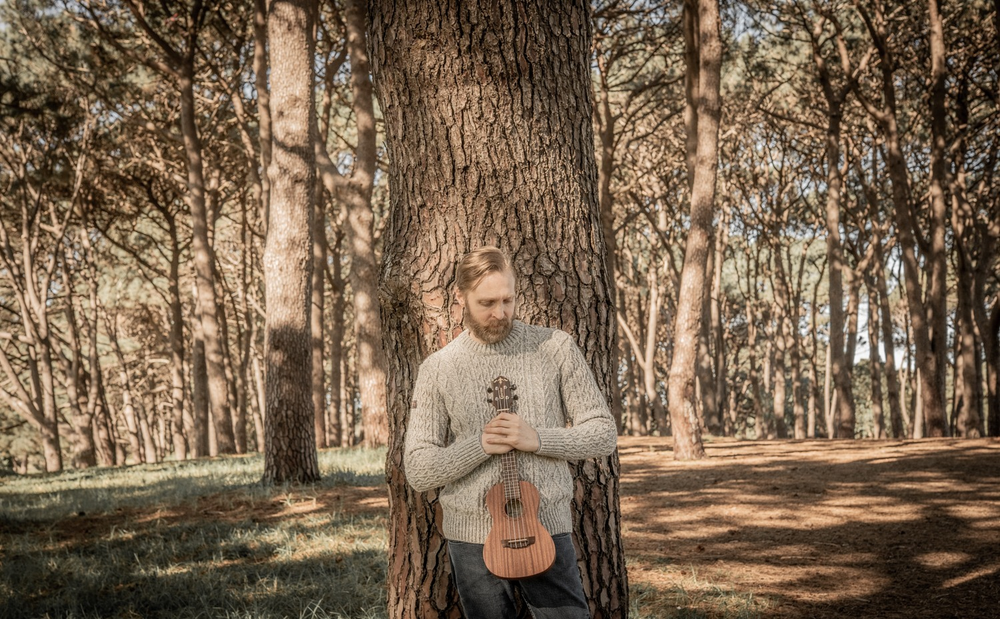
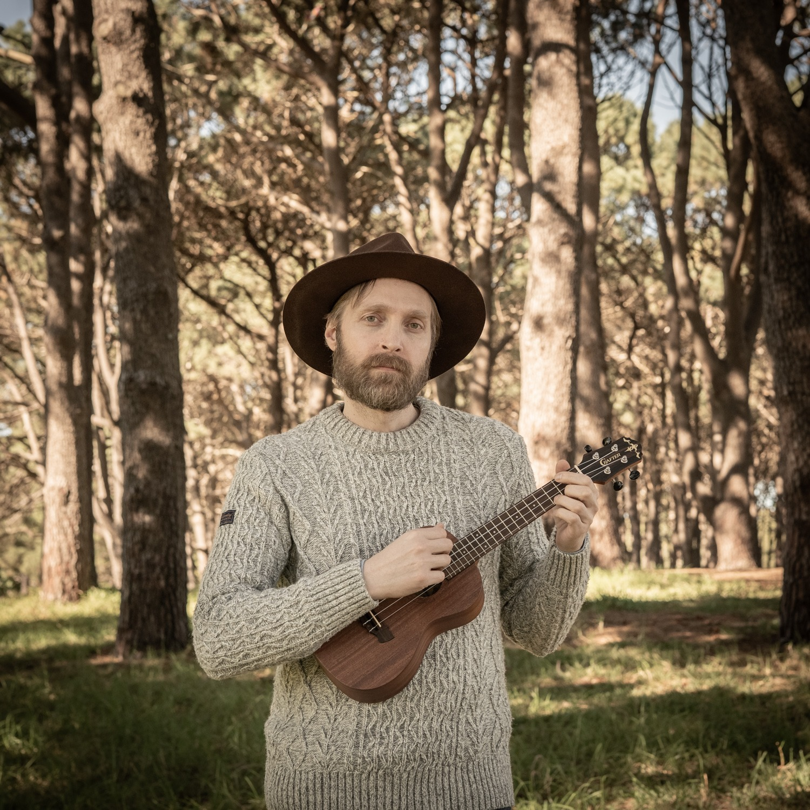

The modern bard stands where folk song, history and imagined worlds meet.
Ideal for historic pubs, breweries, taprooms, themed restaurants, heritage venues, literary events and private functions.
Songs of legend, distant worlds and the sea


Robert Rosina
Robert Rosina is a Sydney-based singer and multi-instrumentalist performing as The Modern Bard.
His performance practice centres on voice and acoustic accompaniment, bringing together folk song, fantasy ballads, narrative music and songs of the sea. His focused 51-selection repertoire is shaped for the social room: an adaptable programme for historic pubs, breweries, taprooms and themed restaurants. Evoking the bards who stood at the heart of entertainment for centuries, his work is shaped by a strong interest in northern history, language and storytelling.
He is the author of Wyrdcasters, a novel series deeply influenced by Norse mythology, and is working toward fluency in Old English as part of his intention to pursue doctoral study at the University of Sydney from 2028. His performances express a profound engagement with the literature, mythology and belief-worlds of early northern Europe.
Robert began developing his musicianship seriously in his teens and progressed rapidly as a guitarist, forming an individual approach to arrangement and accompaniment. He later trained in classical singing with Jae Woo Kim and contemporary singing with Jonathon Welch. He gained professional experience supporting contemporary artists in Australia and overseas, alongside work as a session musician and producer.
As The Modern Bard, Robert brings these musical, historical and literary traditions into contemporary live performance.